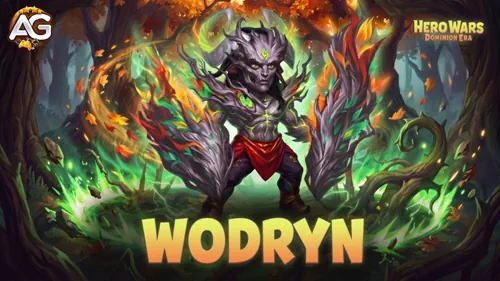
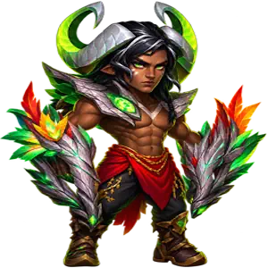
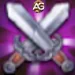
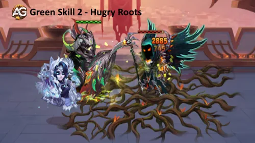
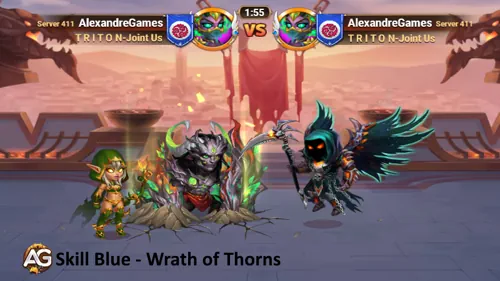
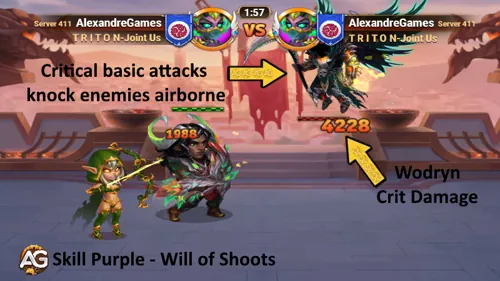
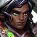
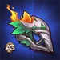
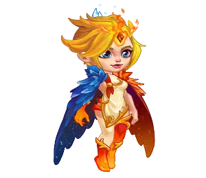
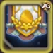

Et si votre tank pouvait transformer la pression ennemie en une meilleure protection, en soins et en rampe de lancement pour K’arkh ? Wodryn apporte cette possibilité dans Hero Wars: Dominion Era. Ses racines volent les attributs principaux, sa canopée protège contre les dégâts purs et ses coups critiques créent deux occasions très différentes. Comprendre cette distinction est le point de départ d’un bon build de Wodryn.
Mon approche consiste à développer la Force et la résistance dont il a besoin pour rester dans le combat, puis à améliorer les coups critiques qui font fonctionner son ensemble de compétences. Dans ce guide, j’explique quelles compétences, apparences, glyphes, artefacts et quels familiers je privilégierais, où sa protection atteint ses limites et comment je l’utiliserais dans deux équipes. Donnons un objectif clair à ces améliorations.

Qui est Wodryn dans Hero Wars: Dominion Era ?
Wodryn est un tank de Force en première ligne qui combine protection de l’équipe, ripostes et effets de coups critiques. Il récompense une équipe qui le maintient en vie assez longtemps pour accumuler des charges protectrices et utiliser régulièrement sa compétence ultime. Son principal outil défensif réduit les dégâts purs ; son Armure et ses autres défenses restent importantes face au reste de l’équipe ennemie.

- Rôle principal : Tank
- Attribut principal : Force
- Position : Première ligne
- Patronages compatibles : Fenris, Oliver, Axel, Biscuit
- Attaque de base : 46 606 (100 % de l’Attaque physique), avec un temps de recharge de base de 4,2 secondes
Évaluation générale de Wodryn dans la méta
Ces évaluations reposent sur la façon dont son ensemble de compétences s’intègre à la composition d’équipes dans Dominion Era. Elles décrivent ses points forts et ses dépendances, plutôt que des taux de victoire mesurés.
- Contrôle : ★★★☆☆ — Les coups critiques de ses attaques de base projettent les cibles en l’air, mais nécessitent de réussir un coup critique. Son drain d’attribut principal ajoute de la pression sans garantir le contrôle.
- Dégâts : ★★★☆☆ — Les racines et les ripostes peuvent punir une pression prolongée ; je donnerais tout de même à l’équipe un héros spécialisé dans les dégâts.
- Synergie : ★★★★★ — Les bonus d’attribut principal pour toute l’équipe, la protection contre les dégâts purs et les projections en l’air lui offrent plusieurs façons d’aider ses alliés, en particulier K’arkh.
- Indépendance : ★★★☆☆ — Il peut se soigner lui-même, mais la fiabilité des coups critiques, la survie en début de combat et la protection contre le blocage des soins restent importantes.
Attributs maximaux de Wodryn - Hero Wars: Dominion Era
Utilisez ces valeurs de développement maximal comme référence. Les effets temporaires de combat et les bonus supplémentaires du familier protecteur choisi peuvent modifier ce que vous voyez pendant un affrontement.
| Attribut | Valeur | Attribut | Valeur |
|---|---|---|---|
| Intelligence | 2 701 | Agilité | 2 831 |
| Force | 18 226 | Santé | 1 054 126 |
| Attaque physique | 46 606 | Attaque magique | 9 653 |
| Armure | 44 397 | Défense magique | 45 689 |
| Chance de coup critique | 8 453 | Précision | 18 226 |
| Résistance aux coups critiques | 18 226 |  Puissance | 179 842 |
Avantages et inconvénients de Wodryn - Hero Wars : Web et Facebook
✅ Avantages
- Protège l’équipe contre les coups infligeant des dégâts purs tant qu’il reste des charges, et chaque charge augmente les attributs principaux des alliés.
- Vole les attributs principaux des ennemis et convertit la quantité drainée en Force pour lui-même.
- Transforme les coups critiques de ses attaques de base en projections en l’air capables de déclencher Vrilles Mortelles de K’arkh.
- Les coups critiques de ses autres compétences fournissent de l’autoguérison et de l’énergie supplémentaire.
- Investir dans la Force favorise à la fois sa réserve de Santé et la progression de ses compétences avec l’Attaque physique.
❌ Inconvénients
- La canopée ne réduit que les dégâts purs, consomme des charges et possède un plafond de réduction par coup.
- Sa compétence passive nécessite des coups critiques ; la Chance de coup critique est une valeur d’attribut, pas un pourcentage garanti.
- Le blocage des soins peut affaiblir sa récupération, tandis que les effets contre les coups critiques peuvent punir le fonctionnement de son offensive.
- La protection contre les projections en l’air réduit l’intérêt de son association avec K’arkh.
- Ses ripostes nécessitent qu’il subisse des dégâts pendant leur période active, les dégâts infligés varient donc selon l’affrontement.
Compétences de Wodryn et priorité d’amélioration
Découvrez comment Wodryn transforme racines, charges protectrices et coups critiques en avantages pour l’équipe, puis choisissez les améliorations de compétences adaptées à votre plan de bataille.
Les compétences apparaissent ci-dessous dans leur ordre en jeu ; le numéro de priorité indique l’ordre d’investissement que je recommande. Les formules utilisent des compétences de niveau 130 et 46 606 d’Attaque physique avant les bonus temporaires de combat. Les valeurs affichées sont arrondies.
1. Grâce de la Canopée (Canopy Grace)
Description de la compétence : Accorde à l’équipe 25 charges protectrices, jusqu’à un maximum de 75. Chaque charge augmente l’attribut principal de chaque allié. Subir des dégâts purs consomme une charge et réduit ce coup de 80 %, dans la limite du plafond de réduction.
Explication de la compétence : La canopée offre deux avantages à la fois : des attributs principaux tant que des charges sont présentes, et une protection lorsque des dégâts purs touchent leur cible. Avec la valeur indiquée, 25 charges correspondent à environ 3 755 points d’attribut principal supplémentaires par allié ; 75 charges correspondent à environ 11 265. Ces calculs servent de référence, car l’Attaque physique de Wodryn peut changer pendant le combat. La limite de 60 256 plafonne les dégâts évités, pas les dégâts subis : un coup de 100 000 dégâts purs infligerait encore 39 744 avant les autres effets. Il ne s’agit pas d’une réduction de 80 % contre tous les types de dégâts.
Bonus d’attribut principal par charge : 150,2 (0,2 % de l’Attaque physique + 0,4 × niveau de la compétence + 5).
Réduction des dégâts purs : 80 % du coup, plafonnée à 60 256 (100 % de l’Attaque physique + 105 × niveau de la compétence).
Délais et effets de la compétence :
- Type : Ultime ; débloquée au rang Blanc
- Charges accordées par utilisation : 25
- Maximum de charges protectrices : 75
- Un coup infligeant des dégâts purs consomme une charge protectrice
Priorité d’évolution : Très élevée (#1) — C’est le cœur de sa protection pour l’équipe. L’améliorer augmente à la fois le bonus d’attribut principal et la quantité maximale de dégâts purs qu’une charge peut éviter.
2. Racines Affamées (Hungry Roots)
Description de la compétence : Pendant 8 secondes, les racines frappent les ennemis dans leur zone une fois par seconde, infligeant des dégâts et drainant leur attribut principal. La quantité drainée devient de la Force pour Wodryn ; les changements d’attributs durent 10 secondes.

Explication de la compétence : Les ennemis dans les racines subissent des coups répétés et perdent de l’attribut principal, tandis que Wodryn gagne de la Force à partir de la quantité drainée. C’est une combinaison utile pour un tank : affaiblir les cibles affectées tout en augmentant sa propre Santé et son Attaque physique grâce à la Force. N’interprétez pas la durée de huit secondes comme des dégâts garantis contre toute l’équipe ennemie ; les cibles doivent rester dans la zone affectée. Les coups critiques de cette compétence peuvent activer la partie soins et énergie de Volonté des Pousses.
Dégâts par coup : 12 571 (20 % de l’Attaque physique + 25 × niveau de la compétence).
Attribut principal drainé par coup : 414,6 (0,6 % de l’Attaque physique + niveau de la compétence + 5).
Délais et effets de la compétence :
- Type : Périodique ; débloquée au rang Vert
- Temps de recharge : 12 secondes
- Durée des racines : 8 secondes
- Intervalle entre les coups : 1 seconde
- Durée du changement d’attributs : 10 secondes
Priorité d’évolution : Élevée (#3) — Davantage de dégâts et un drain d’attributs plus important l’aident à exercer une pression continue tout en renforçant sa résistance fondée sur la Force.
3. Courroux des Épines (Wrath of Thorns)
Description de la compétence : Un effet d’écorce de 8 secondes pousse Wodryn à riposter avec une épine infligeant des dégâts chaque fois qu’il subit des dégâts.

Explication de la compétence : L’écorce transforme les dégâts subis en ripostes pendant sa période active. Je l’apprécie surtout lorsque Wodryn reste en vie sous une pression répétée : davantage d’impacts de dégâts remplissant les conditions créent davantage d’occasions de riposter. Une épine critique peut aussi activer Volonté des Pousses pour obtenir des soins et de l’énergie. Cet effet ne le rend pas invulnérable, et un chiffre de dégâts élevé ne remplace pas des défenses suffisantes pour survivre au début du combat.
Dégâts de contre-attaque : 59 067 (110 % de l’Attaque physique + 60 × niveau de la compétence).
Délais et effets de la compétence :
- Type : Périodique ; débloquée au rang Bleu
- Temps de recharge initial : 5 secondes
- Temps de recharge : 10 secondes
- Durée de l’écorce : 8 secondes
Priorité d’évolution : Élevée (#4) — Améliorez ses dégâts de riposte après la protection principale et la compétence passive. Leur intérêt dépend davantage de la fréquence à laquelle les ennemis infligent des dégâts à Wodryn pendant l’effet d’écorce.
4. Volonté des Pousses (Will of Shoots)
Description de la compétence : Les attaques de base critiques projettent les ennemis en l’air. Les coups critiques des autres compétences restaurent à la place la Santé de Wodryn et accordent de l’énergie supplémentaire.

Explication de la compétence : Distinguez les deux déclencheurs : une attaque de base critique projette sa cible en l’air ; un coup critique avec une autre compétence soigne Wodryn et accorde de l’énergie à la place. Voilà pourquoi la Chance de coup critique compte autant pour son utilité dans l’équipe que pour sa survie. Le partenaire le plus intéressant est K’arkh : tant qu’il est en vie, K’arkh attaque avec Vrilles Mortelles les ennemis projetés en l’air. Au niveau de compétence 130, la condition de dégâts doublés s’applique aux ennemis de niveau 130 ou inférieur. Wodryn fournit des occasions supplémentaires de projection, mais doit toujours réussir ces coups critiques avec ses attaques de base.
Soins par coup critique de compétence remplissant les conditions : 55 706 (100 % de l’Attaque physique + 70 × niveau de la compétence).
Énergie supplémentaire : 120 (0,9 × niveau de la compétence + 3).
Délais et effets de la compétence :
- Type : Passive ; débloquée au rang Violet
- Coup critique d’attaque de base : projection en l’air
- Coup critique d’une autre compétence : autoguérison et énergie supplémentaire
Priorité d’évolution : Très élevée (#2) — Les soins et l’énergie améliorent son endurance et le cycle de sa compétence ultime. Cette priorité renforce la partie liée aux coups critiques de compétences ; la projection des attaques de base reste une mécanique distincte.
Meilleures apparences pour Wodryn - Priorité d’amélioration
Commencez par l’apparence qui améliore à la fois la survie et la progression des compétences, puis ajoutez de la Défense magique lorsque les dégâts des sorts ennemis deviennent une menace pour Wodryn.

1. Apparence par défaut - Force
Gain maximal d’attribut : +1 365 de Force.
Pour Wodryn, chaque point de Force accorde 40 de Santé et 1 d’Attaque physique. Cette apparence ajoute donc 54 600 de Santé et 1 365 d’Attaque physique. Je la privilégie en premier, car l’augmentation d’attaque favorise aussi les formules de tout son ensemble de compétences.
Coût total d’amélioration : 30 825 pierres d’apparence de Force.
Priorité d’évolution : Très élevée (#1) — La Force développe simultanément sa résistance et la progression de ses compétences, ce qui en fait mon premier investissement en apparences.
2. Apparence Sakura - Défense magique
Gain maximal d’attribut : +21 300 de Défense magique.
Grâce de la Canopée s’occupe des dégâts purs, cette apparence aide donc à couvrir une autre menace. Avancez cet investissement si les dégâts magiques tuent Wodryn avant qu’il puisse établir son cycle de protection et de récupération.
Coût total d’amélioration : 55 410 pierres d’apparence de Force.
Priorité d’évolution : Élevée (#2) — Une amélioration défensive importante contre les dégâts magiques ; son urgence dépend des adversaires que vous affrontez.
Conseil sur les apparences : Les bonus des apparences débloquées se cumulent quel que soit le visuel équipé. Les coûts ci-dessus concernent l’amélioration des apparences et n’incluent aucun coût de déblocage.
Priorité d’évolution des glyphes de Wodryn
Développez assez de résistance pour survivre au début du combat, puis améliorez les coups critiques et la progression des compétences. Mes priorités de glyphes aident Wodryn à soutenir son équipe.
1. Glyphe de Santé
Gain maximal d’attribut : +62 200 de Santé.
Priorité d’évolution : Élevée (#2) — Une augmentation directe de Santé l’aide à survivre au début du combat et laisse le temps à son mécanisme de soins de démarrer. Améliorez-le en premier s’il meurt trop vite.
2. Glyphe de Force
Gain maximal d’attribut : +1 135 de Force.
Priorité d’évolution : Très élevée (#1) — Ajoute 45 400 de Santé et 1 135 d’Attaque physique. C’est mon premier choix pour un usage général, car il favorise à la fois la survie et toutes les formules fondées sur l’Attaque physique.
3. Glyphe d’Attaque physique
Gain maximal d’attribut : +4 340 d’Attaque physique.
Priorité d’évolution : Élevée (#4) — Améliore ses attaques, ses ripostes, ses soins, ses effets sur les attributs principaux et son plafond de réduction des dégâts purs. Développez-le après avoir établi la base initiale de survie.
4. Glyphe d’Armure
Gain maximal d’attribut : +6 500 d’Armure.
Priorité d’évolution : Moyenne-élevée (#5) — Aide contre la pression physique avant et entre les bonus de l’arme. Faites-le passer avant les glyphes offensifs lorsque les dégâts physiques sont la raison de la chute de Wodryn.
5. Glyphe de Chance de coup critique
Gain maximal d’attribut : +1 995 de Chance de coup critique.
Priorité d’évolution : Élevée (#3) — Favorise les coups critiques nécessaires aux projections, aux soins et à l’énergie. Le gain est une valeur d’attribut, pas une probabilité de critique de 1 995 %, et le résultat dépend de la cible.
Priorité d’évolution des artefacts de Wodryn
Choisissez des artefacts qui maintiennent Wodryn debout et transforment sa compétence ultime en protection pour l’équipe. La Force vient en premier, suivie de près par les améliorations défensives.

1. Artefact d’arme - Brise-Racines (Rootbreaker)
Bonus maximal d’activation : +50 190 d’Armure pour l’équipe pendant 9 secondes.
Utiliser Grâce de la Canopée peut déclencher l’artefact d’arme. Ce bonus temporaire d’Armure pour l’équipe complète la protection contre les dégâts purs de la compétence ultime. Il ne s’agit pas d’Armure permanente ajoutée aux attributs de base de Wodryn, et la fiabilité de l’activation dépend de l’évolution de l’artefact.
Priorité d’évolution : Élevée (#2) — Développez l’arme lorsque les dégâts physiques menacent l’équipe. Des activations fiables rendent chaque utilisation de la compétence ultime plus précieuse.
2. Artefact de livre - Pacte du Défenseur (Defender’s Covenant)
Gain maximal d’attribut : +12 546 d’Armure et +12 546 de Défense magique.
Il s’agit des attributs défensifs de Wodryn lui-même. Le livre l’aide à survivre aux types de dégâts que Grâce de la Canopée ne réduit pas, y compris au début du combat avant sa première compétence ultime.
Priorité d’évolution : Élevée (#3) — Avancez cet investissement dès que sa résistance individuelle limite le build. Des défenses équilibrées restent utiles même lorsque la récupération par coups critiques n’est pas fiable.
3. Artefact d’anneau - Anneau de Force
Gain maximal d’attribut : +6 249 de Force.
Cela représente 249 960 de Santé et 6 249 d’Attaque physique pour Wodryn. C’est un investissement majeur pour rester en vie et pour augmenter la protection, les dégâts et les soins de son ensemble de compétences.
Priorité d’évolution : Très élevée (#1) — Ma plus grande priorité générale d’artefact pour Wodryn lui-même. Les différents types de ressources d’artefacts permettent de développer l’arme et le livre en parallèle.
Meilleur patronage pour Wodryn
Axel, Oliver, Fenris et Biscuit peuvent accorder leur patronage à Wodryn. Je les classe selon leur utilité générale, avec des options contre les gros coups, pour l’endurance, les dégâts et le blocage des soins.
C’est mon ordre habituel pour un build de tank. Modifiez-le lorsqu’un affrontement particulier nécessite un autre avantage. Les attributs du familier protecteur augmentent avec la Puissance de patronage, et la compétence de patronage nécessite le rang Violet du familier.
1re place - Meilleur choix général : Axel
Attributs supplémentaires : Attaque magique et Armure. Bulle Défensive ! (Defensive Blub!) limite les dégâts d’une seule attaque à environ 45 % de la Santé maximale du héros protégé à la Puissance de patronage maximale. Je préfère Axel lorsqu’un gros coup pourrait arrêter Wodryn avant le début de sa récupération. L’Armure est utile ; l’Attaque magique n’améliore pas ses formules fondées sur l’Attaque physique. De nombreux coups plus petits peuvent malgré tout le submerger.
2e place - Pression physique prolongée : Oliver
Attributs supplémentaires : Santé et Armure. Floraison Éternelle (Eternal Bloom) aide à restaurer la Santé du héros protégé lorsqu’il subit des dégâts physiques alors que sa Santé est inférieure à 50 %. Cela convient bien à un tank qui cherche à se stabiliser sous des attaques physiques répétées. Ce soin complète celui de Wodryn, mais le blocage des soins peut affaiblir les deux. Oliver n’offre pas l’aveuglement de Fenris sur les attaques de base.
3e place - Plus grande contribution offensive : Fenris
Attributs supplémentaires : Attaque physique et Pénétration d’armure. Rage Aveugle (Blind Rage) donne aux attaques de base une chance d’aveugler les ennemis pendant 2 secondes. L’Attaque physique améliore les formules des compétences de Wodryn, et l’aveuglement peut réduire la pression des attaques de base subies. Choisissez Fenris lorsque Wodryn survit déjà confortablement. Fenris n’ajoute pas de Chance de coup critique et ne garantit pas les projections nécessaires à K’arkh.
4e place - Affrontements nécessitant un blocage des soins : Biscuit
Attributs supplémentaires : Attaque magique et Armure. Rester au Frais (Stayin’ Chill) permet aux attaques du héros protégé de réduire les soins reçus par la cible pendant 5 secondes, d’environ 30 % à la Puissance de patronage maximale. Je l’utilise comme outil contre les adversaires qui dépendent beaucoup de la récupération. Ce choix sacrifie la protection d’Axel contre les gros coups et les soins d’Oliver ; vérifiez donc que Wodryn peut toujours tenir la première ligne.
Le familier actif et le familier protecteur ont des rôles différents. Vous pouvez utiliser Axel comme familier actif de l’équipe tout en lui faisant accorder son patronage à Wodryn. Chaque héros reçoit un familier protecteur, et chaque familier ne peut accorder son patronage qu’à un seul héros de cette équipe.
Comment contrer Wodryn dans Hero Wars: Dominion Era
Je cherche des façons d’interrompre les avantages qu’il crée : empêcher les projections, limiter les soins ou punir les coups critiques. Ce sont des outils pour certains affrontements, pas des victoires automatiques ; l’investissement et les quatre autres héros restent importants.
Andvari
Se protège lui-même et protège son allié le plus proche, en privilégiant un allié devant lui, contre les déplacements et les projections en l’air tant qu’il est en vie. Cela peut empêcher les coups critiques des attaques de base de Wodryn de projeter une cible protégée et réduire les dégâts de suivi de K’arkh. Cela ne désactive pas la canopée et ne protège pas tous les ennemis à la fois.
Celeste

Guide de CelesteFlamme Maudite peut bloquer les soins des ennemis affectés, ce qui affaiblit la récupération que Wodryn attend des coups critiques de ses compétences. Limbo convertit aussi les soins bloqués en dégâts magiques. Cela compte tant que Wodryn est couvert par l’effet ; ne supposez pas que Celeste désactive tous les soins pendant tout le combat.
Helios
La compétence Représailles Enflammées punit les attaquants qui infligent des coups critiques à ses alliés pendant que Vent Solaire est actif. Wodryn dépend des coups critiques, ce qui crée une contrepartie dangereuse, surtout aux côtés de Yasmine. La riposte inflige des dégâts magiques, qui ne sont pas couverts par la réduction des dégâts purs de Grâce de la Canopée.
Meilleurs drapeaux de guerre pour Wodryn
Choisissez un drapeau de guerre selon le problème que votre équipe doit résoudre : des soins plus puissants, un gain d’énergie plus rapide pour le tank ou une récupération régulière pour le héros de devant.
Drapeau de Guerre de la Récupération
Effet : Augmente les soins de 10 %. Avantage pour Wodryn et l’équipe : Mon choix habituel pour les deux équipes ci-dessous, car il soutient à la fois les soins de sa compétence passive et les soigneurs alliés. Un soin de 55 706 passe à environ 61 277 avant les autres modificateurs. Il ne supprime pas les blocages de soins.
Drapeau de Guerre de la Ferveur
Effet : Augmente le Gain d’énergie des Tanks de 10 %. Avantage pour Wodryn et l’équipe : Wodryn est un Tank, cela favorise donc le cycle de sa compétence ultime et le renouvellement des charges de la canopée. Envisagez-le lorsque maintenir la protection active compte davantage que les soins supplémentaires ; il ne garantit pas un délai fixe pour la compétence ultime.

Drapeau de Guerre de l’Avant-Garde
Effet : Toutes les 4 secondes, soigne le héros le plus avancé de 1,6 % de sa Santé maximale, plus 0,3 % par motif rouge inséré. Avantage pour Wodryn et l’équipe : Une option de récupération régulière lorsque Wodryn est le héros le plus avancé. Avec 1 054 126 de Santé, le soin de base est d’environ 16 866 avant les autres modificateurs. Un héros placé devant lui reçoit cet avantage à sa place.
Découvrez le guide complet des drapeaux de guerre pour comparer d’autres options propres à chaque équipe.
Meilleures équipes pour Wodryn - Hero Wars: Dominion Era
Voici les deux compositions que je développerais autour de son ensemble de compétences. Toutes deux utilisent Axel comme familier actif et le Drapeau de Guerre de la Récupération. Dans chaque tableau, un familier protecteur se trouve directement au-dessus de son héros, et les héros vont de l’arrière-garde à gauche jusqu’à Wodryn en première ligne à droite.
Équipe 1 : Wodryn, Lyria, Yasmine, Guus et Sebastian
Cette composition utilise Yasmine comme principale menace offensive tandis que Wodryn protège la première ligne. Sebastian favorise les coups critiques, Guus apporte de la récupération et Lyria ajoute son soutien au plan de dégâts. J’y vois une façon de combiner l’endurance de Wodryn lui-même avec une équipe capable de continuer à combattre sous pression.
| Familier actifAxel | ProtecteurFenris | ProtecteurRobin | ProtecteurAlbus | ProtecteurBiscuit | ProtecteurAxel |
| Drapeau de guerreRécupération | Sebastian | Guus | Yasmine | Lyria | Wodryn |
- Wodryn + Axel : Le familier protecteur limite les gros coups pour donner au tank davantage d’occasions d’établir son cycle de protection et d’autoguérison.
- Yasmine + Albus : Yasmine exerce une pression pour éliminer des cibles, tandis qu’Albus favorise ses dégâts purs.
- Sebastian + Fenris : Le soutien aux coups critiques convient à la fois à Yasmine et à Wodryn, tandis que Fenris ajoute de l’utilité aux attaques de base.
- Guus + Robin : Guus apporte du soutien par les soins, et l’énergie régulière de Robin aide au cycle de ses compétences.
- Lyria + Biscuit : Ajoute une réduction des soins à ses attaques. Vérifiez qui reçoit son soutien offensif plutôt que de supposer que tous ses effets de soutien ciblent Wodryn.
Ce que je surveillerais : Helios peut punir les coups critiques de l’équipe, et le blocage des soins affaiblit le plan d’endurance. Récupération n’améliore les soins que lorsqu’ils peuvent réellement être reçus. Si Wodryn tombe tôt, occupez-vous de ses défenses avant de chercher davantage de dégâts.
Équipe 2 : Wodryn, K’arkh, Sebastian, Byrna et Faceless
C’est l’association qui m’intéresse le plus : les attaques de base critiques de Wodryn peuvent projeter des ennemis pour Vrilles Mortelles de K’arkh. Faceless ajoute une autre source de projections, Sebastian soutient le plan fondé sur les coups critiques et Byrna aide l’équipe à tenir. Wodryn devient à la fois le tank et un déclencheur supplémentaire des dégâts de K’arkh.
| Familier actifAxel | ProtecteurMara | ProtecteurRobin | ProtecteurFenris | ProtecteurVex | ProtecteurAxel |
| Drapeau de guerreRécupération | Faceless | Byrna | Sebastian | K'arkh | Wodryn |
- Wodryn + Axel : Protège le tank de première ligne pendant qu’il crée des occasions de projection avec ses attaques de base critiques.
- K’arkh + Vex : K’arkh attaque les cibles projetées en l’air avec Vrilles Mortelles ; Vex favorise son offensive physique.
- Faceless + Mara : Faceless apporte projection et contrôle. Mara favorise la durée des effets de contrôle compatibles ; ne la considérez pas comme un multiplicateur de toutes les projections ou des dégâts de K’arkh.
- Sebastian + Fenris : Soutient le fonctionnement des coups critiques et donne à Wodryn davantage d’occasions d’activer sa compétence passive.
- Byrna + Robin : Ajoute de l’endurance avec l’énergie régulière du familier protecteur pour soutenir le cycle de ses propres compétences.
Ce que je surveillerais : Andvari peut protéger les cibles importantes contre les projections recherchées par cette équipe. Rappelez-vous aussi que les racines et les épines de Wodryn ne projettent pas les ennemis grâce à Volonté des Pousses : leurs coups critiques le soignent et lui accordent de l’énergie à la place. K’arkh doit rester en vie pour que sa compétence Vrilles Mortelles effectue ses attaques de suivi.
▶️Vidéo: J’ai testé Wodryn : voici ce que vous devez savoir - Hero Wars Web/Facebook

▶ Regarder cette vidéo sur YouTube
Ma recommandation de build pour Wodryn
Je commencerais à développer Wodryn avec Grâce de la Canopée et Volonté des Pousses, l’apparence par défaut de Force et une base de survie en glyphes de Force et de Santé. Ensuite, je développerais la Chance de coup critique et l’Attaque physique pour améliorer le fonctionnement de ses projections, de sa récupération et de sa protection. L’Anneau de Force est ma première priorité générale d’artefact, avec l’arme et le livre développés en fonction des dégâts qui menacent l’équipe.
Axel est mon familier protecteur habituel, avec Oliver contre la pression physique prolongée, Fenris pour un build plus offensif et Biscuit lorsque la réduction des soins est l’outil manquant. Utilisez Récupération comme premier drapeau de guerre. Pour les équipes, j’explorerais d’abord l’association avec K’arkh si vous avez déjà investi dans ce héros, et la composition de Yasmine si ces héros sont les plus développés de votre effectif. Observez ce qui met réellement fin au combat : la mort précoce du tank, les soins bloqués ou les projections empêchées nécessiteront chacun des ajustements différents.
Découvrez d’autres guides de Hero Wars: Dominion Era
Donnez votre avis !
Quelle équipe avec Wodryn développez-vous, et quel a été votre affrontement le plus difficile ? Partagez vos expériences, questions et suggestions avec la communauté Alexandre Games.